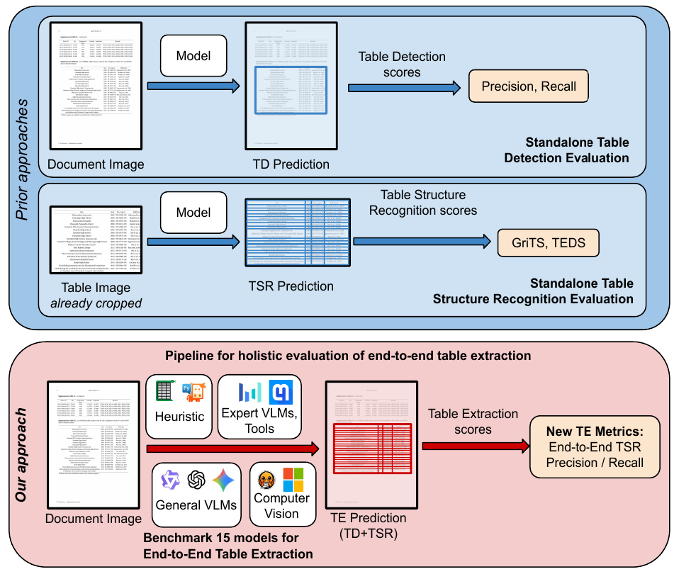
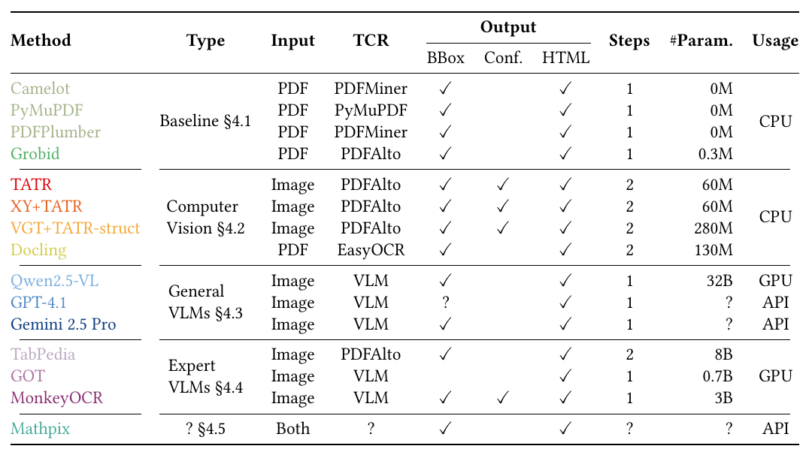
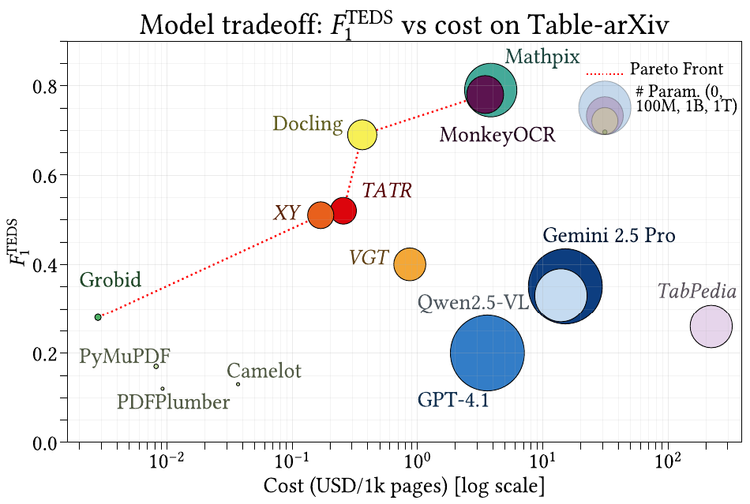
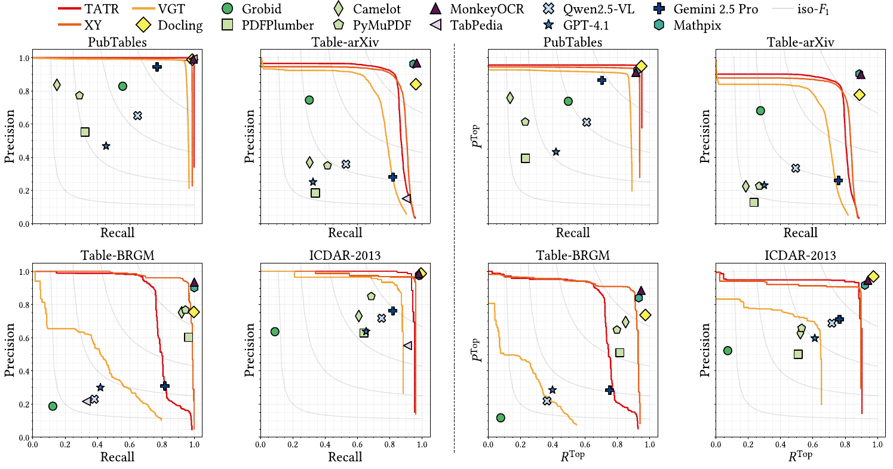
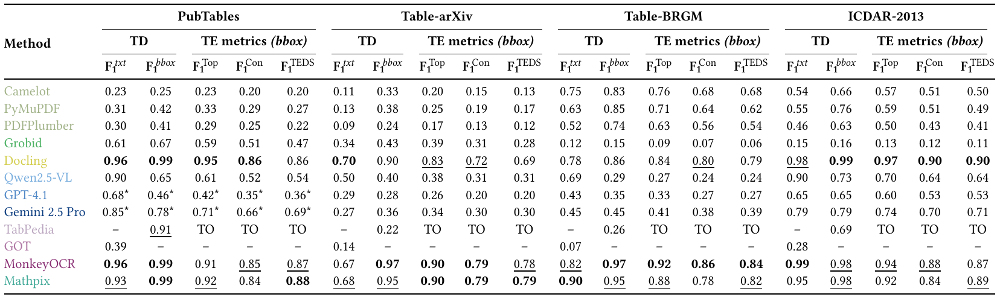

Abstract
Table Extraction (TE) consists in extracting tables from PDF documents, in a structured format which can be automatically processed. While numerous TE tools exist, the variety of methods and techniques makes it difficult for users to choose the most appropriate one. We propose a novel benchmark for assessing end-to-end TE methods (from PDF to the final table) over 86k pages. We contribute an analysis of TE evaluation metrics, and a novel, rigorous evaluation process, which allows scoring each TE sub-task as well as end-to-end TE, and captures model uncertainty. Along with a prior dataset, our benchmark comprises two new heterogeneous datasets of 39k samples. We run our benchmark on diverse models, including off-the-shelf libraries, tools, computer vision-based models and modern approaches using general and specialized vision language models. The results demonstrate that TE remains challenging: current methods suffer from a lack of generalizability when facing heterogeneous data, and from limitations in robustness and interpretability.
Approach

Prior approaches evaluate Table Detection (TD) and Table Structure Recognition (TSR) independently, each on its own dataset. Our approach feeds TD output directly into TSR and scores the full pipeline on the same documents, using new end-to-end TE metrics.
Contributions
→ End-to-end evaluation framework that jointly scores Table Detection and Table Structure Recognition in a single pipeline, capturing model uncertainty through calibration metrics (D-ECE) and new TE-specific Precision/Recall.
→ Two new heterogeneous datasets: Table-arXiv (37k samples from 20 years of arXiv preprints across all domains) and Table-BRGM (256 pages of domain-specific French geological reports produced with Word), totalling 39k newly annotated samples with HTML ground-truth.
→ Comprehensive benchmark of 15 methods spanning classical libraries (Camelot, PyMuPDF, PDFPlumber, Grobid), deep-learning models (TATR, XY+TATR, VGT+TATR, Docling), general VLMs (GPT-4.1, Gemini 2.5 Pro, Qwen2.5-VL), and expert VLMs (TabPedia, MonkeyOCR, GOT, Mathpix).
→ Key findings on generalizability and calibration: VLMs hallucinate on heterogeneous data; heuristic and lightweight methods remain competitive on specific layouts; VGT produces the best-calibrated confidence scores while TATR is poorly calibrated; no method achieves F1TEDS > 90%.
Benchmark Overview
15 end-to-end methods · 4 heterogeneous datasets · 86k pages · 4 model categories

Methods range from simple rule-based Python libraries to object-detection systems, general large VLMs, and specialized expert VLMs. Datasets include PubTables (46k pages), Table-arXiv (37k), Table-BRGM (2k), and ICDAR-2013 (238 pages).
Results

Performance vs. computational cost on Table-arXiv. The Pareto front is mainly composed of Grobid, PyMuPDF, XY, TATR, Docling, MonkeyOCR, and Mathpix.

Table Detection (TD)
Precision–Recall curves across all four datasets.
Probabilistic models are shown as curves; non-probabilistic as dots.

End-to-End Table Extraction (TE)
PTop–RTop curves weighted by GriTS Topology score
across all four datasets.
BibTeX
@inproceedings{soric2026benchmarking,
title = {Benchmarking Table Extraction from Heterogeneous Scientific {PDF} Documents},
author = {Marijan Soric and C{\'e}cile Gracianne and Ioana Manolescu and Pierre Senellart},
booktitle = {Proceedings of the 32nd {ACM} {SIGKDD} Conference on Knowledge Discovery and Data Mining},
year = {2026},
doi = {10.1145/3770855.3817462},
eprint = {2511.16134},
archivePrefix = {arXiv},
primaryClass = {cs.DB},
url = {https://arxiv.org/abs/2511.16134},
}